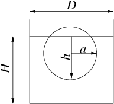

1.8.1. Exercise 1.1 #
Si consideri, sulla superficie terrestre, un recipiente di diametro \(D=2 \ m\) e profondità \(H=3\ m\) contenente acqua di densità \(\rho = 998\ kg / m^3\). Al suo interno è inserita una sfera di raggio \(a=0.2\, m\) e densità pari a \(\rho_s=842.06\ kg / m^3\). Determinare in modo univoco la posizione assunta dalla sfera nel liquido. Tale posizione varia se invece che sulla terra ci si trova sulla Luna?
(\(h=0.3\ m\), non varia sulla Luna.)

Concetti. Legge di Archimede. Condizione di equilibrio. Calcolo del volume di solidi (integrali di volume). Adimensionalizzazione. Soluzione di semplici equazioni non lineari per via grafica (studio di funzione) e/o numerica.
Svolgimento. Per svolgere l’esercizio bisogna calcolare la condizione di equilibrio del corpo, soggetto alla propria forza peso e alla forza che il fluido esercita su di esso (legge di Archimede). Nell’equazione di equilibrio, l’incognita \(h\) compare nella formula del volume immerso nel fluido. L’equazione di equilibrio è un’equazione non lineare in \(h\), da risolvere per via grafica o numerica.
Scrittura dell’equazione di equilibrio del corpo soggetto al proprio peso e alla forza esercitata su di esso dal fluido, diretta verso l’alto e pari al peso del volume del fluido spostato (legge di Archimede). $\(\label{eqn:equil_archimede} \rho_s V_s g = \rho V_c g \quad\Rightarrow\quad \rho_s V_s = \rho V_c\)$
Osservazione. Si trova subito la risposta all’ultimo quesito: poiché \(g\) non compare nell’equazione di equilibrio, la condizione di equilibrio sulla Luna è uguale a quella che si ha sulla Terra.
Calcolo del volume della sfera e della calotta sferica:
Volume della sfera: \(V_s = \frac{4}{3}\pi a^3\)
Volume della calotta sferica: \(V_c = \pi h^2 (a - \frac{h}{3})\)
(per credere, verificare casi limite: \(h=0\), \(h=a\), \(h=2a\); alla fine dell’esercizio è riportato il calcolo, tramite un integrale di volume)
Le formule per i volumi \(V_c\) e \(V_s\) sono inserite nell’eq. [eqn:equil_archimede]{reference-type=»ref» reference=»eqn:equil_archimede»}. L’equazione viene semplificata e scritta in forma adimensionale, introducendo la variabile \(x=\frac{h}{a}\), per mettere in evidenza il parametro che governa il problema, cioè il rapporto di densità \(\rho_s/\rho\). L’equazione di terzo grado in x viene risolta, considerando i limiti fisici del problema (\(0 \le x \le 2\)):
\[\rho \pi h^2 \Big(a-\frac{h}{3}\Big) = \rho_s \frac{4}{3}\pi a^3 \quad\Rightarrow\quad \frac{3}{4} x^2 \Big(1 - \frac{x}{3}\Big) = \frac{\rho_s}{\rho}\]
Alcuni metodi per risolvere equazioni non lineari possono essere ad esempio:
metodi iterativi. Ad esempio metodo di Newton
x res 1.0000 -3.437475e-01 1.4583 -2.406993e-02 1.4990 -5.841602e-04 1.5000 -4.027539e-07 1.5000 -1.924017e-13
metodo grafico (educativo: per problemi più complicati, prima di calcolare le soluzioni con metodi numerici, è bene avere un’idea di cosa si sta cercando). Si cercano le intersezioni delle funzioni \(f_1(x) = \frac{3}{4} x^2 \Big(1 - \frac{x}{3}\Big)\) e \(f_2(x) = \frac{\rho_s}{\rho}\).
Osservazione. Per valori di \(\frac{\rho_s}{\rho}\) compresi tra 0 e 1, esiste una e una sola soluzione fisica del problema. Per i valori di desità «estremi» \(\rho_s = 0\) (la sfera non pesa niente), \(\rho_s = \rho_f\) (la sfera ha la stessa densità del fluido), esistono infinite soluzioni: ad esempio, nel caso di \(\rho_s = \rho_f\) la posizione di equilibrio è indipendente dalla profondità alla quale è posta la sfera. Nel grafico, la funzione \(f_1(x)\) rappresenta il volume immerso della sfera (diviso il volume totale della sfera stessa) al variare della distanza \(h\) del punto più basso dal pelo libero: questa deve quindi essere rappresentata, come in figura, nulla per valori di \(x<0\) (sfera completamente fuori dall’acqua), con il ramo di cubica per \(0<x<2\) (sfera parzialmente immersa), uguale a \(1\) per \(x>2\) (sfera completamente immersa). La funzione \(f_1(x)\) può quindi essere definita a tratti:
Discussione dei risultati. Quando diminuisce la denistà relativa del solido, la linea rossa si abbassa e la soluzione \(x=\frac{h}{a}\) diminuisce (la sfera ha una porzione maggiore al di fuori dall’acqua). Esiste una e una sola soluzione che abbia senso fisico, fino a quando la densità relativa è compresa tra 0 e 1: non ha senso considerare valori negativi (la densità è una quantità positiva), mentre per valori di \(\frac{\rho_s}{\rho}\) maggiori di 1 non può esistere una condizione di equilibrio statico (la sfera affonda…).
Calcolo volume cupola sferica. É comodo svolgere il calcolo in coordinate cilindriche \((r,\theta,z)\). Il volume \(V_{im}\) della parte immersa è uguale a
Definendo \(h = R+l\) come la quota immersa della sfera, si ottiene: